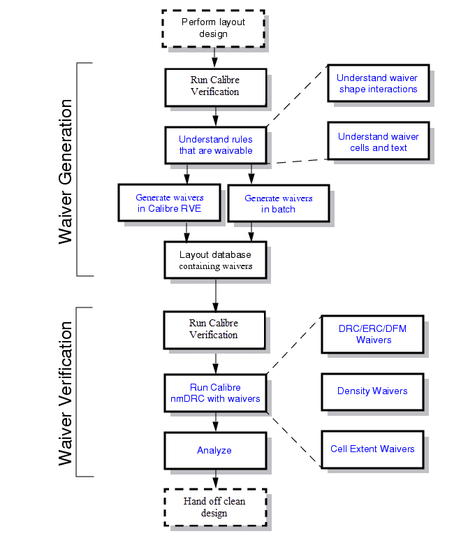

You can perform
waiver generation in batch mode or interactively using Calibre® Interactive™ or Calibre® RVE™. Calibre RVE
is the preferred method for generating waivers. Waiver application
can also be done in batch mode and Calibre Interactive.
Getting Started With Calibre
Auto-Waivers Flow
The following video provides an introduction to the Calibre Auto-Waivers
flow: